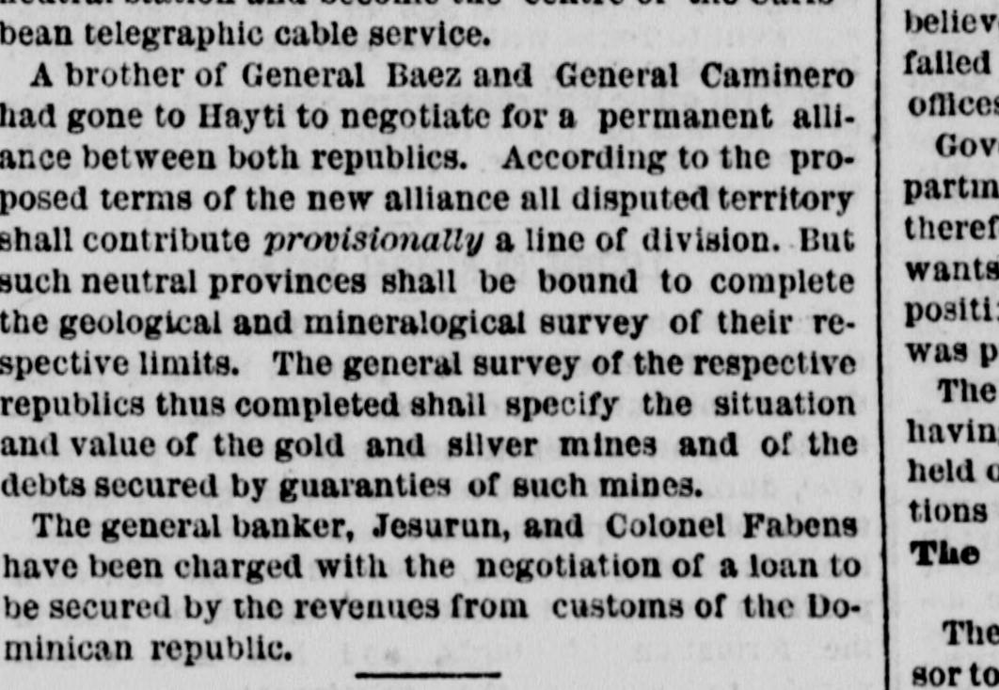
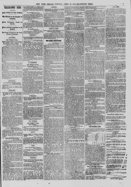

THE PRESS TELEGRAMS. A Commission from the Baezist Party for the Sale of Samana—Revolution in the Republic—Conflicting Reports from the Antagonistic Parties.LOS TELEGRAMAS DE LA PRENSA. Una comisión del partido baecista para la venta de Samaná—Revolución en la República—Informes contradictorios de los partidos antagónicos.
The New York Herald. New York [N.Y.], April 28, 1868. Page 9. Also published as the New York Daily Herald. Published by James Gordon Bennett. A daily newspaper, 1840–1920.The New York Herald. New York [N.Y.], 28 de abril de 1868. Página 9. También publicado como New York Daily Herald. Publicado por James Gordon Bennett. Periódico diario, 1840–1920. View the originalVer el original


See the full pageVer la página completaOn April 27, 1868, the New York Herald reported that Dominican commissioner Mr. Fabens and Curaçao banker Señor Jesurun arrived in Havana en route to Washington to negotiate the sale of the Bay of Samaná and a loan secured by Dominican customs revenues. Meanwhile, the people of Santo Domingo were reportedly exasperated with the Baez administration—which was imprisoning adversaries and suspected of planning to abscond with state funds—and a revolution expected to elevate General Luperon or ex-President Cabral was imminent. Additionally, reports of specie arriving for the Samaná purchase were contradicted, and it was believed the Baez party was acting in concert with President Salnave of Haiti.El 27 de abril de 1868, The New York Herald comunicó que el comisionado dominicano señor Fabens y el banquero de Curazao señor Jesurun arribaron a La Habana rumbo a Washington con miras a negociar la venta de la bahía de Samaná y un empréstito garantizado por los ingresos de las aduanas dominicanas. Entretanto, la ciudadanía de Santo Domingo se hallaba indignada con la administración de Báez —la cual encarcelaba adversarios y era sospechosa de preparar el desfalco del tesoro público—, vislumbrándose una inminente revuelta que encumbraría al general Luperón o al expresidente Cabral. Se desmintió por otra parte el rumor sobre la llegada de numerario para la adquisición de Samaná, presumiéndose que los partidarios de Báez obraban de acuerdo con el presidente Salnave de Haití.
FULL TEXT:TEXTO COMPLETO:
The New York Herald April 28, 186828 de abril de 1868
SANTO DOMINGO.SANTO DOMINGO.
SPECIAL TELEGRAM TO THE HERALD.TELEGRAMA ESPECIAL PARA EL HERALD.
Baezist Policy—Samana to be a Free Port—An Alliance with Hayti.Política baecista—Samaná será puerto libre—Una alianza con Haití.
HAVANA, April 27, 1868.LA HABANA, 27 de abril de 1868.
The steamer Pajaro del Oceano, Captain Ochoa, has arrived here with advices from St. Domingo to the 20th inst.El vapor Pajaro del Oceano, capitán Ochoa, ha llegado aquí con noticias de Santo Domingo hasta el 20 del corriente.
Although General Baez had taken the usual oath as President of the republic, Congress was endeavoring so to amend the Constitution during its present session as to confirm the leading points of General Baez' policy. These were the following:— To make Samaná a free port of entry and a general foreign mail station. To arrange the mail and trade service at Samaná so that it should form a neutral station and become the centre of the Caribbean telegraphic cable service.Aunque el general Báez había prestado el juramento acostumbrado como Presidente de la república, el Congreso se esforzaba por enmendar la Constitución durante su presente sesión de modo que se confirmaran los puntos principales de la política del general Báez. Estos eran los siguientes:— Hacer de Samaná un puerto libre de entrada y una estación general de correos extranjera. Arreglar el servicio de correos y de comercio en Samaná de modo que forme una estación neutral y se convierta en el centro del servicio del cable telegráfico del Caribe.
A brother of General Baez and General Caminero had gone to Hayti to negotiate for a permanent alliance between both republics. According to the proposed terms of the new alliance all disputed territory shall contribute provisionally a line of division. But such neutral provinces shall be bound to complete the geological and mineralogical survey of their respective limits. The general survey of the respective republics thus completed shall specify the situation and value of the gold and silver mines and of the debts secured by guaranties of such mines.Un hermano del general Báez y el general Caminero habían ido a Haití para negociar una alianza permanente entre ambas repúblicas. Según los términos propuestos de la nueva alianza, todo el territorio en disputa contribuirá provisionalmente a una línea de división. Pero tales provincias neutrales estarán obligadas a completar el estudio geológico y mineralógico de sus respectivos límites. El estudio general de las respectivas repúblicas así completado especificará la situación y el valor de las minas de oro y plata y de las deudas garantizadas con tales minas.
The general banker, Jesurun, and Colonel Fabens have been charged with the negotiation of a loan to be secured by the revenues from customs of the Dominican republic.El banquero general, Jesurun, y el coronel Fabens han sido encargados de la negociación de un empréstito que será garantizado por las rentas de aduanas de la república dominicana.